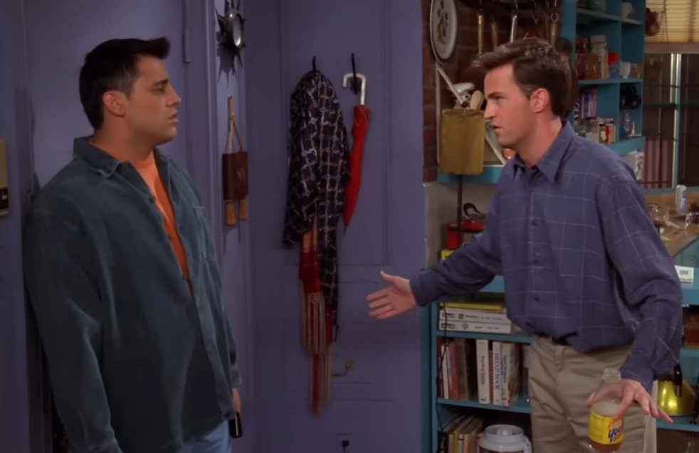

Progressif
Des notions de base jusqu’aux points plus subtils, avec une vraie montée en difficulté.
Faire de l'anglais un réflexe
Entraîne-toi sur les temps, les articles, les prépositions, les questions, les négations et bien plus encore, avec des exercices pour progresser étape par étape.
À propos
L’objectif est simple : rendre la grammaire anglaise réflexive grâce à des exercices basé sur la répétition.
Des notions de base jusqu’aux points plus subtils, avec une vraie montée en difficulté.
Chaque partie du site est orientée vers l’entraînement concret : quiz, phrases à compléter, corrections.
Une interface simple et agréable pour donner envie de revenir travailler régulièrement.
Exercices
All verb tenses: present, past, future, conditional...
Articles, pronouns, possessives, demonstratives, quantifiers...
in, on, at, under, above, between, phrasal verbs...
Adjectives, adverbs, comparatives, superlatives...
Common structures, gerund vs infinitive, question tags...
Levels, idioms, numbers, dates, common verbs...
Video Study
Retrouve les vidéos étudiées en cours, leurs scripts complets et des exercices de vocabulaire associés.

Prêt à commencer ?